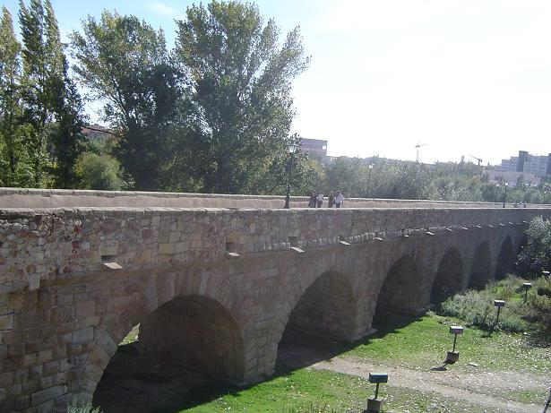
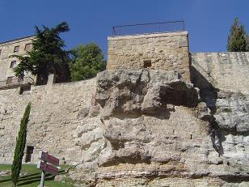
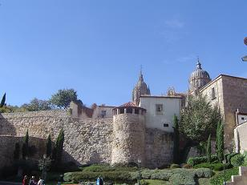
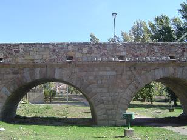

|
SALAMANCA
|
|

Salamanca, la antigua SALMANTICE, mansio numero IX del Iter ab Emerita Asturicam, a ella llegamos como lo hacían los antiguos pobladores; cruzando el río Tormes a través de la calzada de su punte romano. Pero antes de los romanos según nos narra el historiador Ptolomeo, estaba habitada por el pueblo de los Vettones. A finales del siglo IV o principios del III a.e.c. este pueblo fue conquistado por los Vacceos que se vieron atacados por Aníbal en el 220 a.e.c. Era una ciudad muy rica en agricultura y ganadería. El antiguo castro ocupaba los cerros de San Vicente (Teso de San Vicente) y Peña Celestina. De época romana se conservan pocos resto, de los que destaca el puente romano con su "verraco", sus calzadas y lienzos de muralla...
 
La construcción del Puente Romano esta datada en el siglo I, aunque no se puede afirmar con total seguridad el emperador que ordenó su construcción, esta obra se le atribuye a Trajano. El puente fue construido para salvar el paso del río Tormes por la ciudad. Está ubicado en la denominada Ruta de la Plata que unía Mérida con Astorga. De la construcción originaria romana se conservan quince arcos, lo más próximos a la ciudad. Son arcos de medio medio punto con grandes dovelas almohadillas. Los otros once arcos, han sufrido varias reconstrucciones. En 1613 es reparado según el proyecto de Juan de Alvarado, y en 1677 se reconstruyen los arcos destrozados por causa de la riada de San Policarpo en 1626.

En Salamanca la calzada romana se interna desde Extremadura por Puerto de Béjar, discurre por el valle del río Cuerpo de Hombre hacia la localidad de La Calzada. En el trayecto, son visitas indispensables los conjuntos históricos de Béjar, Candelario y Montemayor del Río.
La ruta prosigue hacia Valdelacasa y Fuenterroble de Salvatierra donde la calzada fue utilizada históricamente como ramal del Camino de Santiago. Por San Pedro de Rozados llegamos a Salamanca cruzando el puente romano, desde donde se dirige a Calzada de Valdunciel para abandonar la provincia camino de Zamora. Este tramo de la Vía de la Plata es un cómodo paseo que te permitirá descubrir varios miliarios, restos del enlosado, puentes, alcantarillas, quitamiedos y otras obras magnificas como...............
En diciembre de 2010 se ha descubierto en la calle La Rua, los restos de una fortificación celtibera del siglo IV a.e.c. Su estado de conservación es muy bueno y en algunas partes llega al 1,5m de altura.
En agosto de 2017 en la calle San Pablo esquina con calle San Buenaventura, aparecieron restos de época romana, medieval y moderna de varias viviendas, además de la canalización y encauzamiento de la alberca de Santo Domingo, que permitían conocer el desarrollo urbanístico de ese ámbito de la ciudad desde los primeros pobladores del mismo.
|